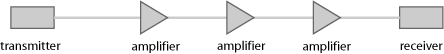
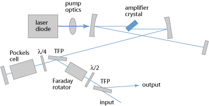

RP Fiber Power – Simulations- und Designsoftware für Faseroptik, Faserverstärker und Faserlaser
| Überblick | Features | Geschwindigkeit | Modell |
| Faser-Daten | Benutzung | Demos | Versionen |
Das ideale Werkzeug für die Analyse passiver und aktiver Faseroptik
RP Fiber Power ist eine leistungsfähige und hochwertige numerische Software für das Design und die Optimierung von faseroptischen Geräten – insbesondere von Faserverstärkern und Faserlasern wie auch anderen Wellenleiterlasern, aber auch von Faserkomponenten wie Faserkopplern, Mehrkernfasern und verjüngten Fasern.
Die Software bietet sowohl eine sehr effiziente Leistungspropagation wie auch volle Strahlpropagation (numerical beam propagation). Die Ausbreitung ultrakurzer Pulse kann ebenfalls untersucht werden, z. B. für Faserverstärker und nichtlineare Pulskompressoren oder auch in Chirped-Pulse-Verstärkersystemen.
RP Fiber Power ist
- ein enorm vielseitiges Werkzeug für Spezialisten,
- aber gleichzeitig (v. a. seit Version 6 mit maßgeschneiderten Formularen) auch sehr geeignet für Benutzer, die nicht (oder noch nicht) Experten in diesem Gebiet sind.
Es ist für jeden, der sich ernsthaft mit Faseroptik beschäftigt, eine unentbehrliche Hilfe für maximale Produktivität – sei es in der industriellen Entwicklung, in der wissenschaftlichen Forschung oder in der Lehre. Die Bedieneroberfläche vereint eine enorme Flexibilität mit einem einfachen Einstieg. Deswegen ist diese Software für schnelle Berechnungen in der Industrie ebenso gut geeignet wie für komplexe Untersuchungen in der wissenschaftlichen Forschung.
Die Produkt-Beschreibung
Sie können unsere Broschüre im PDF-Format herunterladen.
Demo-Videos
Unsere Demo-Videos (aktualisiert in 08/2018) geben Ihnen einen direkten Eindruck vor allem davon, wie man unsere Software bedient. Sie können sich davon überzeugen, dass wir eine hochwertige Benutzeroberfläche entwickelt haben, die Ihnen den Start erleichtert und selbst höchst ausgefeilte Simulationen erlaubt.
Hier ist unser Einführungs-Video:

Anwendungen
RP Fiber Power lässt sich auf einen weiten Bereich von Komponenten und Geräten anwenden:
| Komponenten und Geräte | Beispiele für Anwendungen |
|---|---|
einmodige und mehrmodige Fasern
|
Berechnung von Eigenschaften von Moden wie z. B. Amplitudenprofile, effektive Modenflächen, effektive Brechungsindizes, chromatische Dispersion; Berechnung von Einkoppeleffizienzen; Simulation der Einflüsse von Biegungen, nichtlinearer Selbstfokussierung oder “gain guiding” auf die Strahlpropagation, Propagation von Solitonen höherer Ordnung |
Faserkoppler, Doppelkernfasern, Mehrkernfasern,
|
Simulation der Pumpabsorption in Doppelkernfasern, Analyse des Einflusses von Biegungen, Lichtausbreitung in gestreckten Fasern, Funktionsweise von Faserkopplern, der Sättigung in Verstärkern, etc. |
Faserverstärker
|
Ermittlung der Verstärkung und Sättigungscharakteristik (im cw-Fall oder bei der Pulsverstärkung), Analyse des Energietransfers in Erbium-Ytterbium-dotierten Verstärkerfasern, Einfluss von Quenching-Effekten, verstärkte Spontanemission (ASE) etc. in einzelnen Verstärkerstufen oder mehrstufigen Verstärkersystemen |
Faseroptische Datenübertragung |
Analyse dispersiver und nichtlinearer Signalverzerrungen, Einfluss von Verstärkerrauschen, Optimierung des Nichtlinearitäts-Managements und der Platzierung von Verstärkerstufen |
Faserlaser
|
Analyse und Optimierung der Leistungskonversionseffizienz, des Wellenlängen-Abstimmbereichs, der Q-switching-Dynamik |
Ultrakurzpuls-Faserlaser und -verstärker
|
Untersuchungen der Pulsformung, von Stabilitätsgrenzen, Einfluss von Nichtlinearitäten und chromatischer Dispersion, Chirped-Pulse-Verstärkung, Verstärkung parabolischer Pulse, optimierte Pulskompression, Empfindlichkeit auf Rückreflexe, Superkontinuum-Erzeugung |
Gepulste und Ultrakurzpuls-Bulk-Laser und -verstärker |
Untersuchungen des Güteschaltens, der Modenkopplung, Ermittlung der benötigten Parameter sättigbarer Absorber, Empfindlichkeit auf Rückreflexe, Stabilitätsgrenzen der regenerativen Verstärkung |


Für weitere Informationen:
- Sehen Sie die Liste der Features und die Beschreibung des verwendeten physikalischen Modells an.
- Betrachten Sie unsere breite Palette von Fallstudien und die Video-Demos!
- Laden Sie die PDF-Broschüre von RP Fiber Power (45 Seiten, englisch) herunter.
- Werfen Sie einen Blick auf die häufig gestellten Fragen.
- Beachten Sie unser kostenloses Tutorial "Passive Fiber Optics", für das die Software intensiv benutzt wurde, sowie das Tutorial "Modeling of Fiber Amplifiers and Lasers", das Konzepte und Methoden erklärt.
Wenn Sie noch Fragen haben oder ein Angebot benötigen: